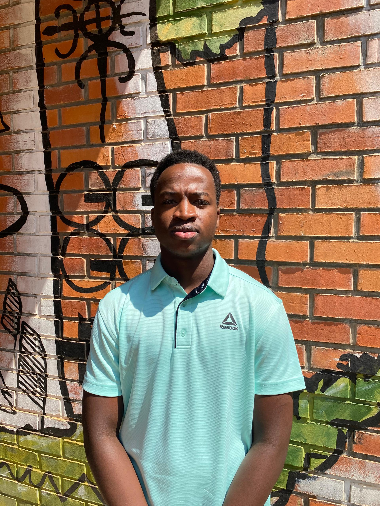
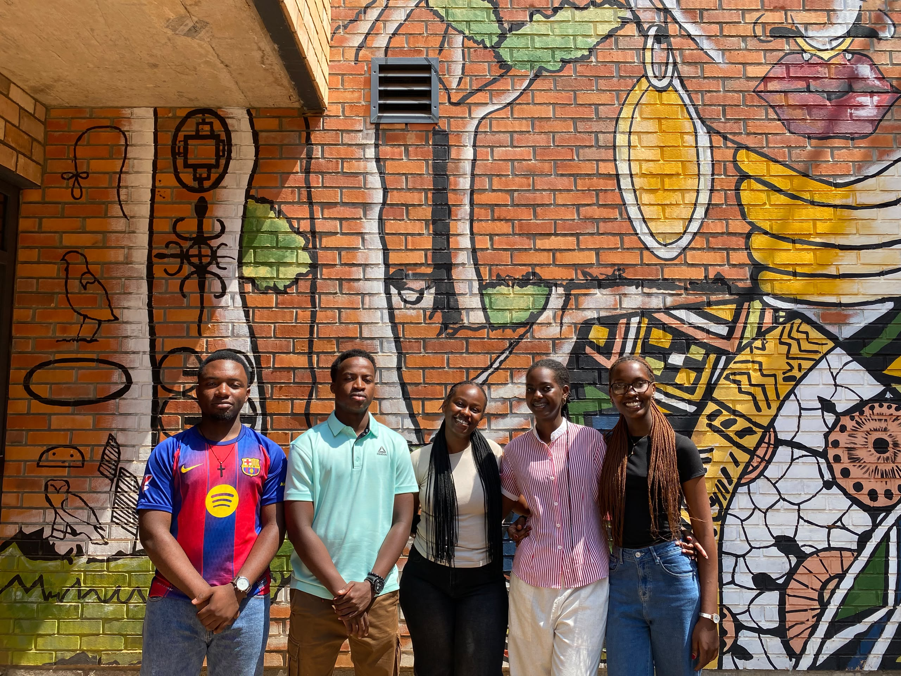
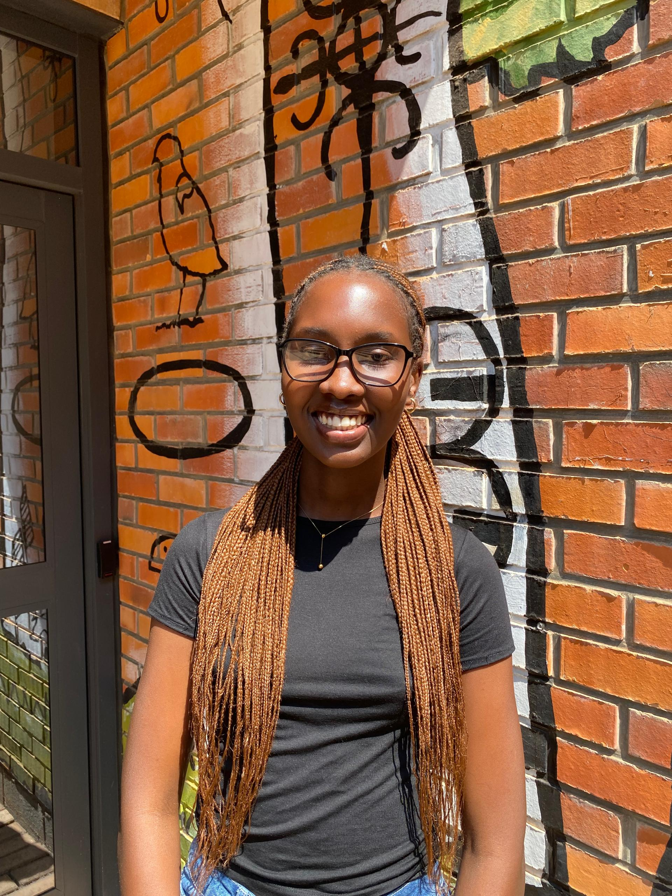
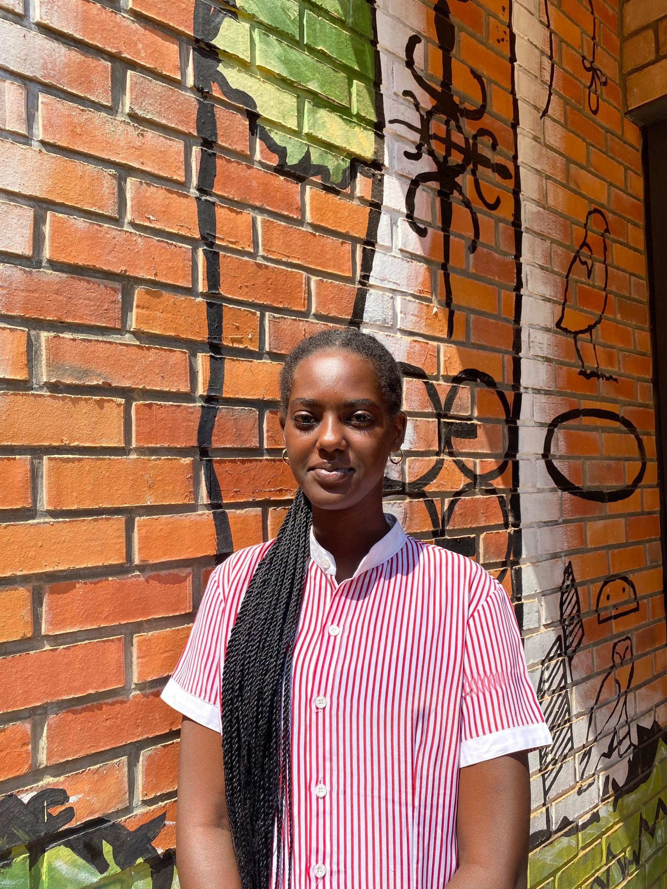
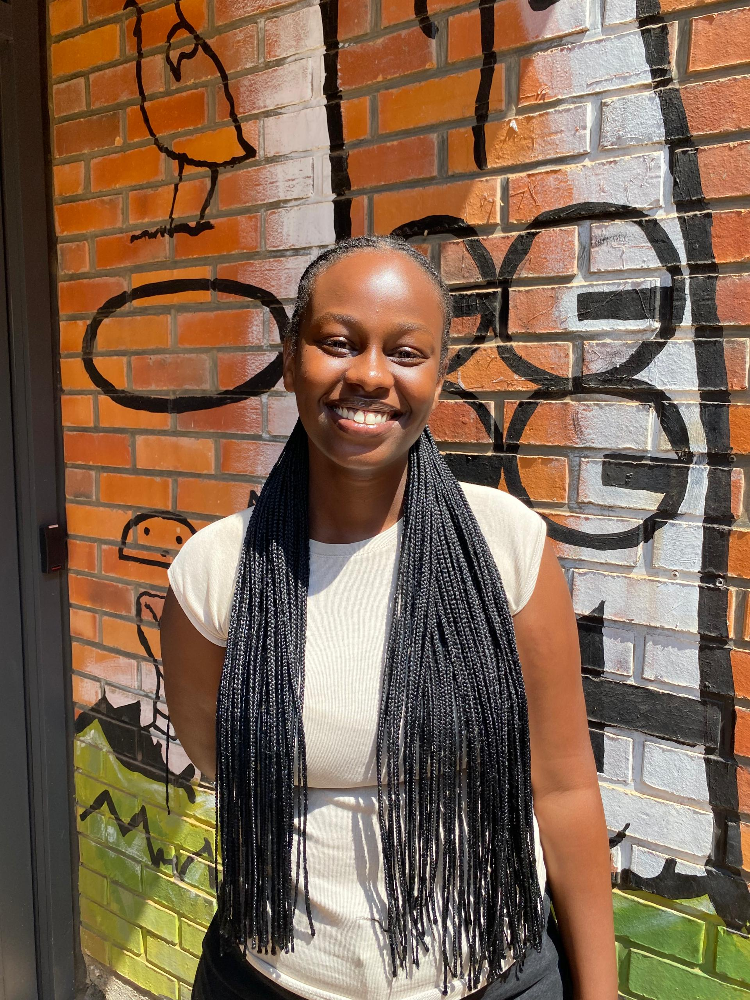
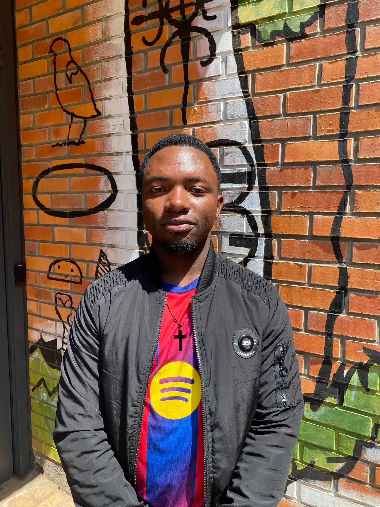
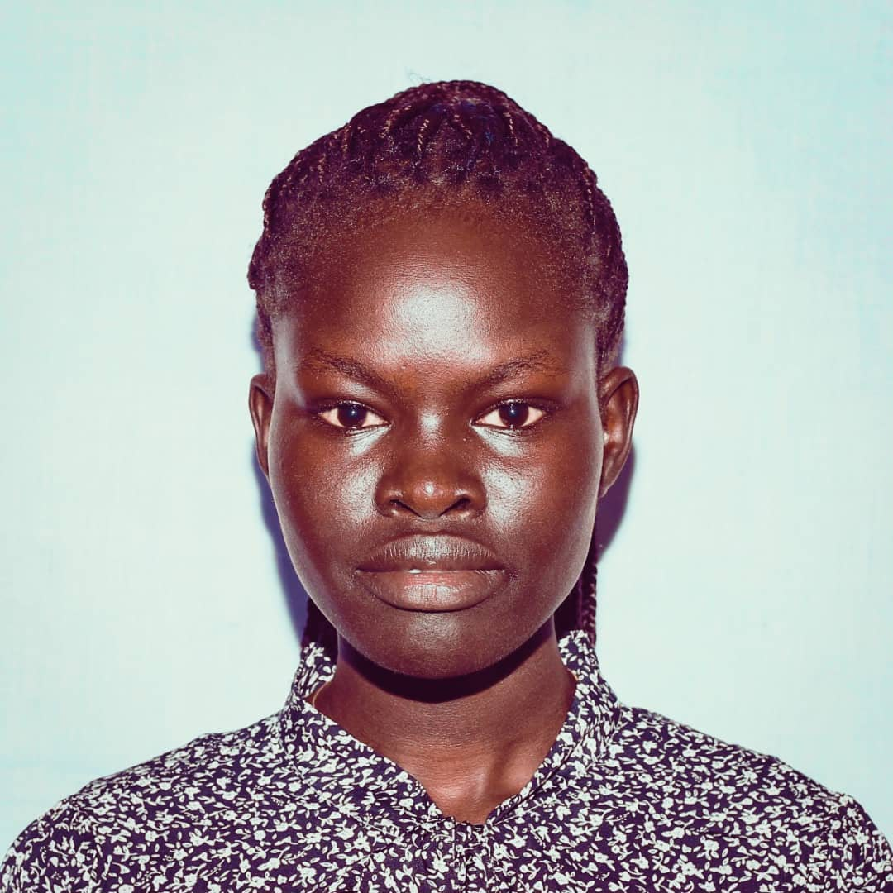

Business Strategist
Butera Bruno
Market entry strategy & value chain optimization across Central Africa.
Six entrepreneurial leaders from the African Leadership University — built through the E-Lab program to tackle one of the DRC's most urgent challenges: agricultural self-sufficiency.

Six challenges that shaped how we think, research, collaborate, and build. Here is what we learned.

Competency Mapping & Team Formation
Formulated our identity as a collaborative unit — mapping individual strengths in business strategy, community partnerships, and data-driven decision-making. We drafted our Mission Statement and operating agreement.
"To prove that Congo's prosperity can be grown from its own soil."
→ Operational Charter + Skills Matrix

Systems Thinking & Root Cause Analysis
Confronted the DRC's structural agricultural paradox: $180M+ spent annually on sugar imports despite 80M+ hectares of uncultivated arable land. Through PESTLE and Five Whys, we identified deep institutional drivers dating back to 1960.
→ PESTLE Analysis + Five Whys Root Cause Diagram

Radical Empathy & Direct Community Action
Partnered with WHATIF at the IRAMIRO Center to raise funds for pediatric medical insurance. Hands-on community service proved direct contributions can bypass structural barriers to deliver immediate impact.
"Empathy looks different for everyone."
→ Pediatric Health Campaign + Impact Report

Strategic Scale & Institutional Learning
Interviewed WaterAid, extracting four key insights: system strengthening over infrastructure, cooperative leadership, the federation model of evidence-based scaling, and acting before perfect conditions exist.
→ WaterAid Diagnostic Report + Federation Framework

Business Feasibility & Commercial Design
Translated systems-level research into a commercial model. The "Train, Grow, Connect" framework builds a closed domestic value chain connecting smallholders to regional processors like Sucraf.
→ Lean Canvas + Train, Grow, Connect Roadmap
Digital Synthesis & Platform Engineering
This final milestone synthesizes our research, social impact, and commercial design into an interactive digital platform to recruit strategic investors, processors, and farming cooperatives across the DRC.
→ This responsive web ecosystem — built, deployed, live.
Six people. Diverse strengths. One operating agreement.

Market entry strategy & value chain optimization across Central Africa.

NGO partnerships, community engagement & stakeholder relations.

Agricultural systems mapping, PESTLE analysis & root cause research.

Human-centered design, user research & community testing.

Full-stack development, platform architecture & digital systems.

Supply chain logistics, cooperative management & field operations.
The DRC spends $180M+ annually on sugar imports — despite 80M+ hectares of uncultivated arable land. Our venture, built through the E-Lab, addresses this directly.
Organize & Equip Cooperatives
Organizing local smallholders into agricultural cooperatives and providing training on high-yield sugarcane farming, irrigation, and sustainable land management.
Distribute Raw Materials
Distributing organic, high-yield sugarcane seeds and agricultural inputs to maximize output on existing family plots, reducing dependency on expensive external inputs.
B2B Off-Taker Integrations
Securing contract-backed supply agreements with regional processors like Sucraf to prevent crop waste and guarantee sales — creating a reliable closed-loop value chain.
LAUNCHING OUR MISSION | MINDCRAFT
Hunt for Treasure | Team Mindcraft Interviews WaterAid – E-Lab Challenge 4
Being a Source of Their Smile | Mindcraft Joins What IF at IRAMIRO Center | ALU E-Lab
The Abundance Curse: The Untold Story of DRC's Rural Farming Communities | Mindcraft
Meet Mindcraft | E-LAB THINKTANK INTRO | ALU RWANDA
From the first farmer enrollment to a guaranteed off-take contract — the complete Mindcraft platform flow, end to end.
Smallholder farmers in DRC communities register through local NGO networks, church groups, and government agricultural extension offices.
Enrolled farmers are grouped into formal cooperatives with elected women-led leadership, operating agreements, and shared governance structures.
High-yield organic sugarcane seeds and precision agricultural inputs distributed to cooperative members, reducing dependency on expensive external supply chains.
Cooperative members cultivate on existing family plots with Mindcraft's technical oversight — irrigation, crop rotation, and yield tracking per plot.
Collective harvest coordinated across the cooperative network with zero-waste protocols — timing, logistics, and bulk aggregation managed by Mindcraft coordinators.
Contract-backed B2B off-take agreements secured with regional processors — primarily Sucraf — guaranteeing farmer revenue and closing the domestic supply loop.
We are a Kigali-based thinktank solving a problem 4,000 km away. Our research is rooted at ALU — our impact is targeted at three agricultural regions across the DRC.
Where Team Mindcraft researches, designs, and builds. The E-Lab program at ALU is where this venture was conceived and developed.
Are you a processor, investor, or farmer? Tell us your role and we'll connect you with the right person on our team.
Watch our E-Lab videos, research updates, and team stories on YouTube.
Watch on YouTube →